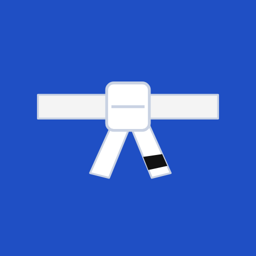

Focus Grappling
A no-nonsense training log for BJJ and grappling.
Log mat time in seconds, tag the techniques you drilled, track sparring subs, build streaks toward your weekly goal and see your hours at each belt. Pro adds Health Connect sync, watch heart rate and one-tap logging of workouts from your Amazfit or Galaxy Watch.
Privacy policy · Contact: Focus Grappling Support